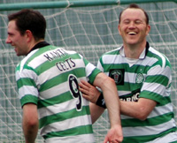
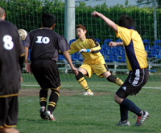
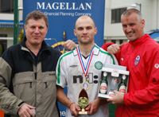

Top 2 to Meet in FJ Cup Final
Hachioji Park Saturday 26th April,
BFC took advantage of their Swiss 'Get out of Jail free' card that put them in the semi's, coming back from 1 nil down to beat Sala 3-1. Carlos Aranda powered in a free kick to equalize after Sala had taken an early lead through Toby Long. New BFC youngster Keisuke, then went on to score a brace of fine goals to lead his team into the final!
YCAC 2nds fairytale Cup journey was brought to an end by Hibs, though not until they'd given the Div 1 team a run for their money. The Div 3 challengers took the lead in the first half and held on well into the 2nd. When Hibs finally got the winner, there was controversy as to whether it was off-side, but the goal stuck & Hibs will play BFC in the final. more ...
FJ.
|  |
|
All smiles for Gavin Duffy after he seals Celts victory, heading home their 3rd goal.
|
CELTS Dump JETS to Bottom.
Hachioji Koen Saturday 26th April,
Celts cruised to comfortable 3-0 win over Saitama Jets, notching up our first victory over the Jets in a while and ensuring a nail biting regulation battle climax for Jets in the their final game with BFC Vagabonds. The Celts management team had coerced most of the team out to Hachioji Park very early on the Saturday morning to ensure a decent warm up and to run through some drills on set pieces prior to the game, the extra effort of getting up at an unearthly hour on a Saturday morning was soon to be evident, pure genius on behalf of the management team if I do say so myself. more ...
SY.
Promotion - Sealed with a Kiss
Misato Sunday 27th April,
Lions were going into the game against Barbarians with determination to seal their promotion with a final push against a team that can be rendered as the only true rival from events in the past.
Lions already had a 100% record against Barbarians from friendlies and with the last TML meetings finishing 2-0, and 3-0 to Lions. more ...
HS.
Bad Workmen Blame Technicolour Tool
OiFuto Sunday 20th April,
We should have known from the start. When you line up against an opponent wearing a green, yellow and red kit, and they're kicking off with a green yellow and red match ball, you can pretty much guarantee that it's going to run for them rather than you. Nevertheless, the Albion Old Boys overcame both the biased ball and their own rustiness to get past a much-improved Guarana side with a 4-2 win that (barring further forfeits) should guarantee at least second spot in Div 3. more ...
TC.
Final Shot at the 'Grassy Knoll'??
YC&AC Sunday 20th April,
YCAC breezed past a depleted Geckoes team in a somewhat meaningless end of season game in what might yet prove to be the last TML1 fixture at YCAC played on grass. Just dont put your mortgage on it! more ...
ST.
RSPCA to Investigate Cruelty to Panthers
|  |
|
Kaji fires home the winner for Shane.
|
YC&AC Sunday 20th April,
For the second time in a month, the fixture list drew together two of the seemingly lower lights of the third division. And, for the second time in a month, the two sides combined to produce a display belying of the lowly league positions of both teams. The rock solid ground at YCAC carried the scars of the previous weekend's sixes shenanigans and the peculiar linings of a midweek baseball caused all sorts of confusion for both sides, as the attempted to play what passed for the sensational silky soccer expected by fans of the TML. more ...
AW.
Panthers Lacking Grrrr!!
YC&AC Sunday 20th April,
Looking at the table before the game you would have expected a one sided game, the Panthers side that is. Our newest recuits, Kei, Jon and a rejuvenated Tom joined us and we were assured a great game and a win at the end. Sadly all did not go to plan and after the first 30 seconds the defense knew what was in store for us! more ...
LR.
Somi – The Lion King!
YC&AC Sunday 20th April,
A very windy day in YCAC saw WS Clash playing for Div 2 survival against a tough and determined Lions outfit. Lions had a debutant ex-pro keeper, Hisham, replacing the absent Orlando. more ...
HS.
|  |
|
Henry Monohan receives the Magellan MVP award as Celts win the Charity 6's. MORE
|
Yama Grabs 3 Points for Hibs
Hodogaya Koen Saturday 12th April,
The Swiss always give Hibs a tough time, and it was no different Saturday. They had assembled a team with size and skill for the occasion, and the game was played at a high pace and level throughout. more ...
JA.
Cup-tie Rule Sees BFC Through to Semi-Finals
Tokyo Wednesday 9th April,
Having beaten BFC 2-1 in the FJ cup quarter finals on Saturday, April 5th at Oi Futo, the Swiss were forced to relinquish their semi-final spot to their British adversaries due to one of their players having played for another team in the same competition - in strict contravention of the tournaments rules more ...
FJ.
|